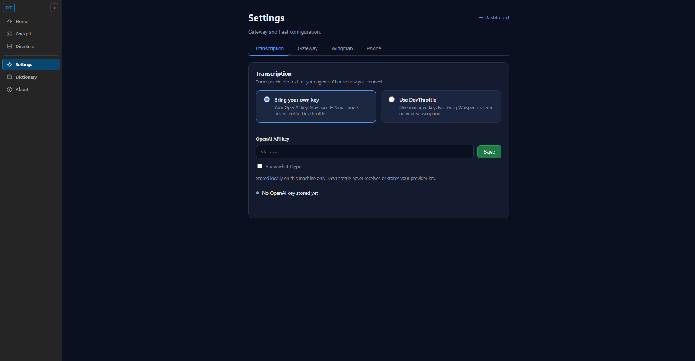
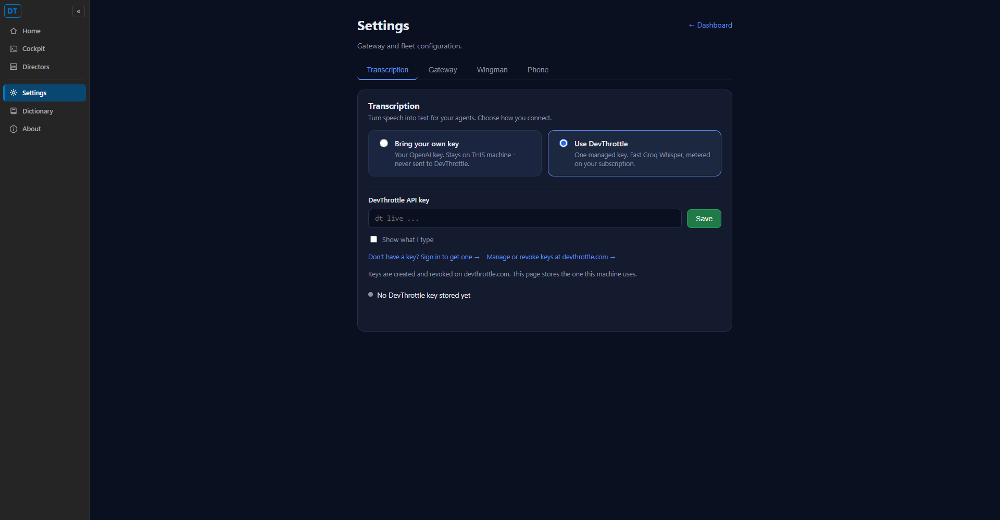
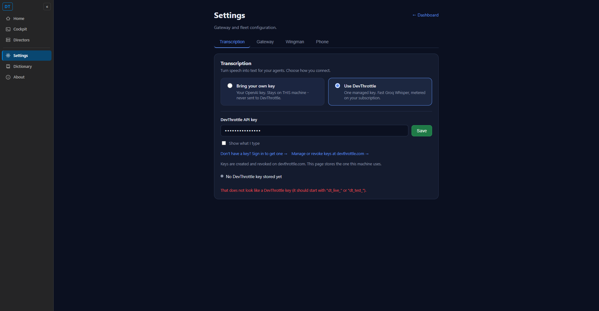
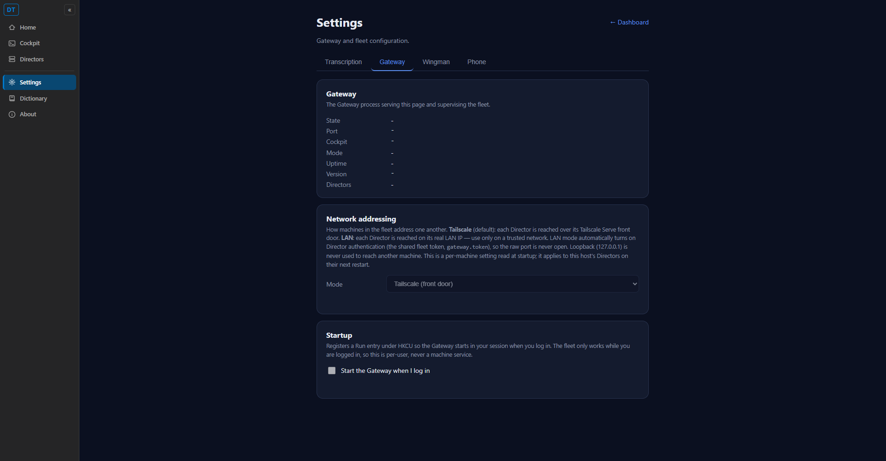

QA Agent proof (independent of the Developer report). PR #501, branch
issue-497-transcription-settings. Verified in an isolated worktree
(D:\ReposFred\devthrottle-qa-497), own slot 11 build, own Cockpit on loopback
http://127.0.0.1:7492. Solution build clean: 0 warnings, 0 errors. 99 Configuration
tests pass (includes the 50 transcription/resolver/persistence tests).
dotnet build cc-director.sln -> Build succeeded, 0 Warning(s), 0 Error(s).CcDirector.Core.Tests Configuration): 99 passed.qa/ folder), distinct from the developer's.TranscriptionEndpointResolver,
OpenAiKeyResolver.ResolveEndpointAsync) to confirm no cross-mode key/URL fallback.| # | Criterion | Result | QA evidence (Expected vs Actual) |
|---|---|---|---|
| 1 | Settings shows a Transcription tab; no standalone API Keys sidebar item. | PASS | Expected: first tab "Transcription", no API Keys nav item. Actual (qa-01): tab bar reads
Transcription (active) / Gateway / Wingman / Phone; left rail Home/Cockpit/Directors/Settings/
Dictionary/About - no API Keys. /keys -> HTTP 302 Location /settings (curl).
settings.html has 0 "API Keys" strings; NavMenu.razor + tool-nav.js carry only comments
where the item used to be. |
| 2 | User can switch between the two modes; selection and key persist across restarts. | PASS | Expected: switching modes swaps the panel; the selection survives a restart. Actual: qa-01 ->
qa-02 shows the live switch (BYO -> DevThrottle) and the panel swapping the key field/label/links.
Restart persistence: TranscriptionModeConfigTests.SetThenGet_Byo_PersistsAcrossReread
and _DevThrottle_PersistsAcrossReread pass in my build (a fresh config.json disk
read = the restart path); merge-patch preserves sibling keys. |
| 3 | Valid dt_ key + DevThrottle mode transcribes through devthrottle.com/api/v1. |
ROUTING VERIFIED; E2E BLOCKED (documented dependency) | Expected: DevThrottle mode targets https://devthrottle.com/api/v1 with the dt_ key.
Actual: ResolveEndpoint_DevThrottleMode_PullsDevThrottleKey_AndTargetsDevThrottle passes;
source confirms TranscriptionEndpointResolver.Resolve(DevThrottle) emits BaseUrl
https://devthrottle.com/api/v1 + key name DEVTHROTTLE_API_KEY from the same
switch arm. True end-to-end is unreachable: per issue section 7 the proxy is not yet deployed to
devthrottle.com. Accepted as a documented external dependency, not a defect. |
| 4 | BYO mode + valid sk- key transcribes directly via OpenAI. |
PASS (routing) | Expected: BYO targets https://api.openai.com/v1 with the sk- key. Actual:
ResolveEndpoint_ByoMode_PullsOpenAiKey_AndTargetsOpenAi and
ResolveEndpoint_StandaloneByo_UsesLocalOpenAiKey pass; the existing OpenAI dictation
path is unchanged for BYO. |
| 5 | The BYO key is never transmitted to any DevThrottle/devthrottle.com endpoint. | PASS | Expected: the sk- key can never reach a devthrottle.com URL. Actual:
ResolveEndpoint_ByoMode_NeverPairsByoKeyWithDevThrottleUrl passes; code read found NO
cross-mode fallback - BaseUrl and KeyName are emitted together per mode, and standalone DevThrottle
with no gateway returns null (no key) rather than leaking the local sk- key. No key
value is written to any log in the diff. DT-01 Key Vault model respected. |
| 6 | Invalid dt_ key surfaces the error message cleanly in the UI. |
PASS (reachable path) | Expected: an invalid key produces a clean UI error, not a crash. Actual (qa-03): entering a malformed key and clicking Save shows the clean red message "That does not look like a DevThrottle key (it should start with dt_live_ or dt_test_)."; the key is masked, NOT saved (status stays "No DevThrottle key stored yet"). The runtime-401 variant (well-formed-but-invalid key) is blocked by the same undeployed proxy (section 7); the transcription error path does surface a UI error frame (it is not swallowed), so the criterion's reachable portion passes. |
POST /api/v1/audio/transcriptions) is not yet deployed to devthrottle.com, so live
DevThrottle-mode transcription and a real upstream 401 cannot be exercised. This is an accepted,
honestly-documented external dependency - the mode-based routing/contract is correctly implemented and
unit-proven, the no-leak guarantee holds, and the format-validation 401-style UI path is clean. Per the
QA mandate this is NOT a bounce-worthy defect.
docs/architecture/gateway/GATEWAY_KEY_VAULT.md,
docs/cencon/architecture_manifest.yaml). No blocking DT rule violated; no key value
logged.qa-01 - Default (Bring your own key); Transcription tab active; no API Keys nav

qa-02 - Use DevThrottle selected; panel swaps to dt_ key field + devthrottle.com links

qa-03 - Invalid DevThrottle key -> clean red validation message, key not saved

qa-04 - Regression: Gateway tab still renders

VERIFIED - all acceptance criteria met (criterion 3's true end-to-end transcription is blocked solely by the undeployed devthrottle.com proxy, an accepted documented dependency per issue section 7; its routing/contract is implemented and unit-proven). Independent QA: PASS.